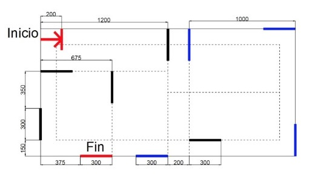

Lego
Descripción: Para este proyecto, teníamos que programar el robot de Lego para que realizara determinadas acciones y de esta manera lograra llegar a su destino.
Características:
- El robot tenía que avanzar en línea recta, y al encontrar una
cinta de color haría lo siguiente:
- Negro: Realizar un giro de 90° a la derecha y mostrar en pantalla: Derecha.
- Azul: Realizar un giro de 90° a la izquierda y mostrar en pantalla: Izquierda.
- Rojo: Detenerse y mostrar en pantalla: Fin.
Imágenes:

Opinión personal: Me gustó llevar a cabo este trabajo, fue divertido estar probando lo que hacía el robot cada vez que le cambiábamos algo al programa.